Claudeタグが付けられた新着記事 - Qiita
Claude（クロード）は、Anthropic（アンソロピック）社が開発した大規模言語モデル（LLM） です。人間の対話のニュアンスを理解し、自然で安全な対話を行うことを目指して設計されており、倫理的かつ安全性の高いAI開発に重点が置かれています。最新のモデルラインナップには、コーディングや知識作業において世界で最も高度なモデルである Fable 5.1 や Mythos 5.1 をはじめ、強力なエージェント機能とコーディング性能を備えた Opus 5、高い知性と優れたエージェント機能を併せ持ち日常業務を支える Sonnet 5、用途に応じた Haiku などが展開されています。Claudeの主な特徴と用途自然な対話と高度なテキスト処理人間の会話の流れや意図を深く理解し、文章の生成から長文資料の要約・特定情報の抽出まで高品質に行います。高度なコーディング・科学研究支援コードの生成や修正支援にとどまらず、Fable 5.1 や Mythos 5.1 では科学的進歩に貢献する研究機能や極めて高度な知識作業に対応します。AIエージェント機能Opus 5 や Sonnet 5 を筆頭に、複雑なタスクや日常のプロフェッショナルな業務を自律的に実行する強力なエージェント機能を備えています。倫理的・安全なAI設計「Claude's Constitution（憲法）」や「責任あるスケール方針（Responsible Scaling Policy）」などのフレームワークに基づき、安全性が確保されています。Claude活用の利点高い信頼性と安全性明確な安全性・アラインメント方針のもとで開発・運用されているため、ビジネスや研究環境でも安心して導入できます。開発者と専門職の生産性向上強化されたコーディング能力や最先端のエージェント機能により、開発プロセスや専門業務の効率を飛躍的に高めます。用途に応じた柔軟なモデル選択最高度な研究・開発向け（Fable / Mythos / Opus）から日常業務（Sonnet）、各種用途向け（Haiku）まで、目的に合わせた最適なモデル選択が可能です。リファレンスAnthropic - Our research and productsAnthropic Help CenterClaude API DocumentationClaude (AI) - Wikipedia関連タグLLMAnthropicAI生成AI
フィード
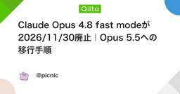
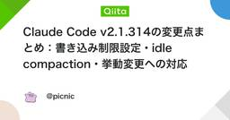
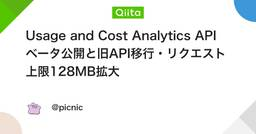
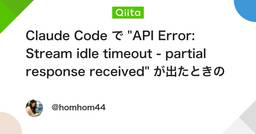
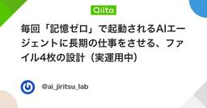
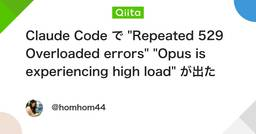
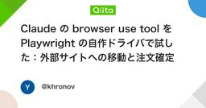
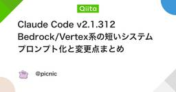
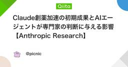
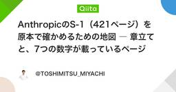
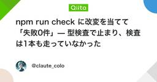
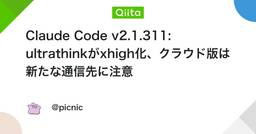
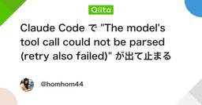
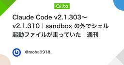
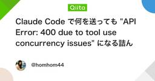
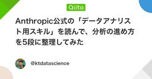
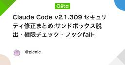